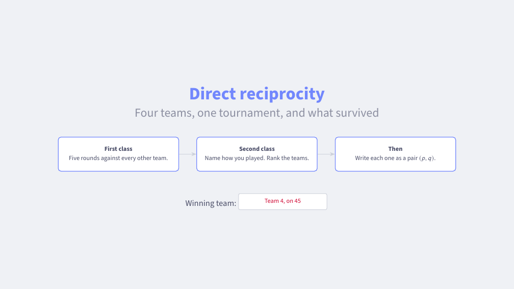
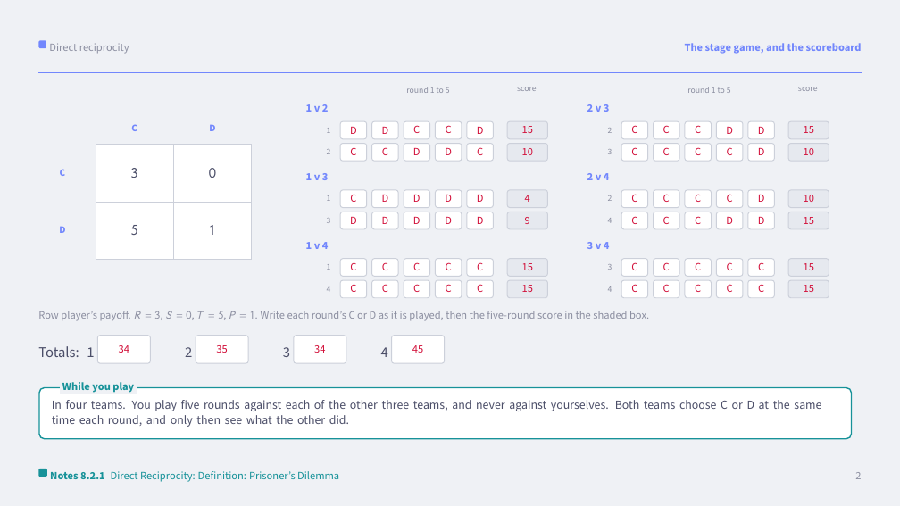
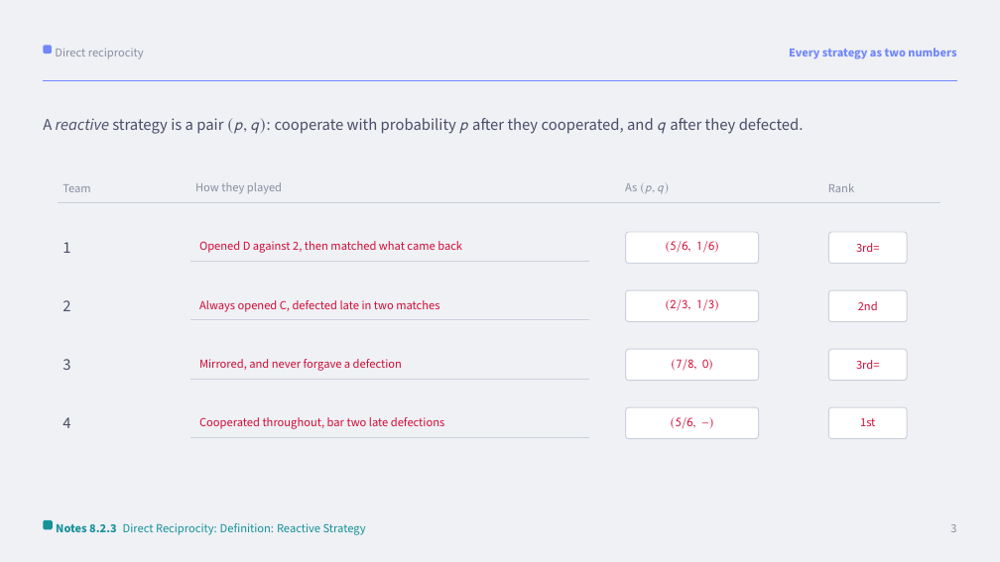
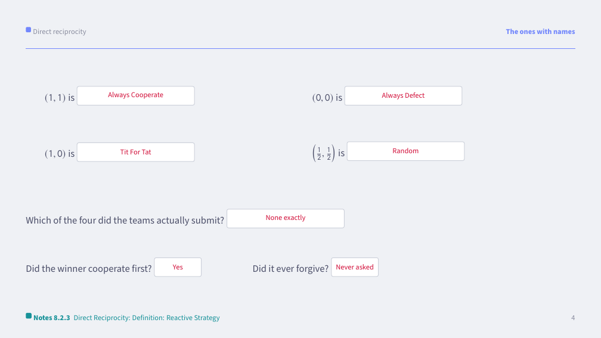
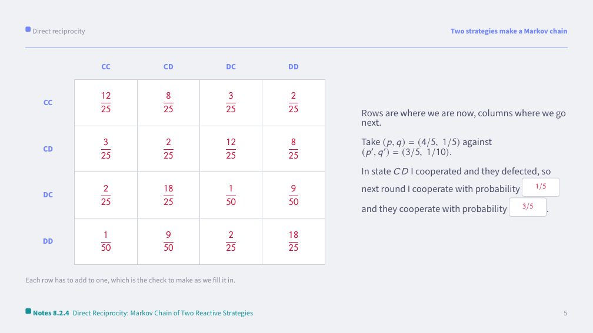
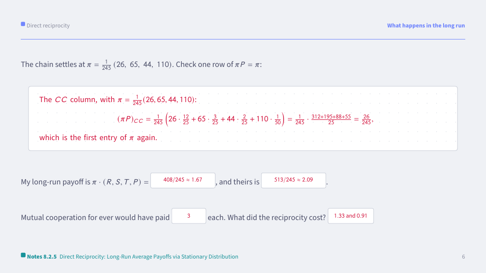
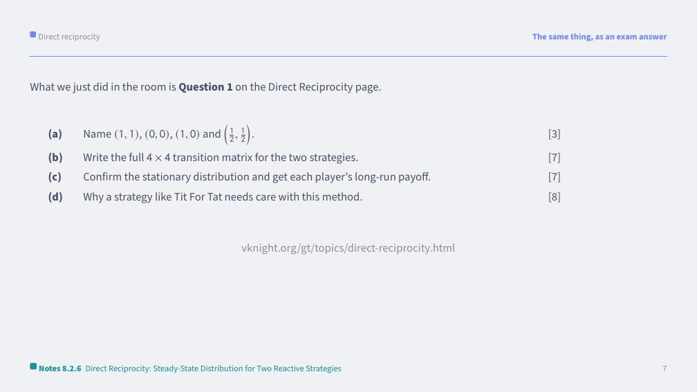
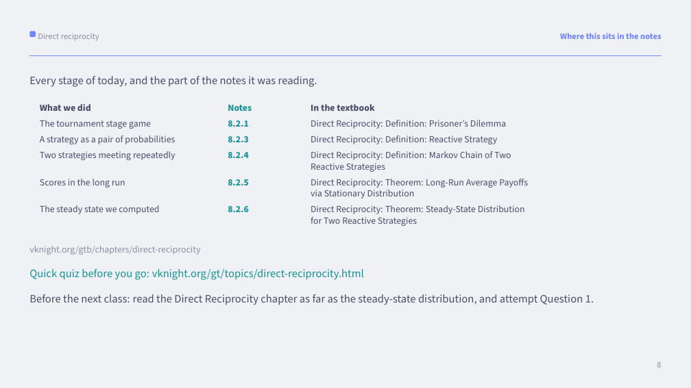

Goal. Surface the strategies students use when reciprocity is possible and let a class-wide iterated Prisoner's Dilemma tournament motivate reactive strategies. This activity is happy to run across two classes: the first to play the tournament, the second to analyse the results.
The deck. There is a write-on deck at /decks/direct-reciprocity/main.pdf, covering both classes: a round-robin scoreboard, a row per team for its strategy as a pair \((p, q)\), and an empty \(4 \times 4\) transition matrix.
Every slide of the deck names the numbered section of the notes it is reading, and the last slide gathers them into one table, marks what is examinable and sets the reading for the next class. The rules of the activity sit on the slide that is up while the room plays, so a pair working alone is not going from memory.
First class. Watch the Golden Balls video. Then split the class into four teams and run an iterated Prisoner's Dilemma tournament. The teams play the game themselves rather than submitting a strategy: every pair of teams plays five rounds, choosing at the same time each round, and no team plays itself. With four teams that is six matches:
The deck's scoreboard has a box for each team against each opponent, with the diagonal closed off, so each match's score goes in as it finishes. Hand out a bribentive to the winning team.
Second class. Ask each team to say how they played, then rank them. Discuss which did well and why, drawing out reciprocity, retaliation and forgiveness. Ask each team to write their strategy as a reactive strategy \((p, q)\), where \(p\) is the probability of cooperating after the opponent cooperated and \(q\) after they defected.
Discuss the Direct Reciprocity chapter.
Discussion Point: After the definition of a reactive strategy, ask students to express the strategy their team played as a pair \((p, q)\).
Discussion Point: After the Markov chain of two reactive strategies, ask how the long-run outcome of two teams' strategies could be computed.
Discussion Point: After discussing Tit For Tat, ask: the Folk Theorem tells us cooperation can be sustained; what does this chapter add to that?
Close on the last slide. It names what the class was reading and sets the reading for next time. Then run the quick quiz from the Direct Reciprocity topic page: five questions on the screen, answered by a show of hands. It takes five minutes and tells us both what landed.
Every page of the deck with its boxes completed is at the foot of this page. They are built from the deck's own source, so they cannot drift away from what we project. The scoreboard and the table of strategies carry the 2026 cohort's tournament, which is a record of one class rather than a key: team 4 won on 45, team 2 took 35, and teams 1 and 3 tied on 34. Fitting a reactive strategy to each team's twelve conditioned rounds gives \((5/6, 1/6)\) for team 1, \((2/3, 1/3)\) for team 2 and \((7/8, 0)\) for team 3. Team 4 never met a defection in the previous round, so their \(q\) is unidentified.
The named strategies. \((1, 1)\) is Always Cooperate, \((0, 0)\) is Always Defect, \((1, 0)\) is Tit For Tat, and \(\left(\tfrac{1}{2}, \tfrac{1}{2}\right)\) is Random.
The Markov chain. With \((p, q) = (4/5, 1/5)\) against \((p', q') = (3/5, 1/10)\) and states ordered \((CC, CD, DC, DD)\), where the first letter is mine, my next move depends on their last and theirs on my last:
Every row adds to one, which is the check to make as the class fills it in.
The long run. \(\pi = \tfrac{1}{245}(26, 65, 44, 110)\) satisfies \(\pi P = \pi\). My long-run average payoff is \(\pi \cdot (3, 0, 5, 1) = 408/245 \approx 1.67\) and theirs is \(\pi \cdot (3, 5, 0, 1) = 513/245 \approx 2.09\). Mutual cooperation for ever would have paid \(3\) each, so both teams lose by roughly a point a round to their own retaliation.
Why Tit For Tat needs care. It is deterministic, so the chain it induces is not ergodic: it can lock into a cycle and the stationary distribution is no longer unique or independent of where you start. The usual fix is to perturb it slightly, which is what a strategy like Generous Tit For Tat does.
The activity above is written up as a marked exam question: Question 1 (the in-class activity) on the Direct Reciprocity page, with a full worked solution. Closing the loop here is the step that helps students who find exams hard: work through that question together, or set it as the immediate follow-up, so they see the game they just played turned into a full-mark answer.
Every page of the deck with its boxes completed, built from the same source as the blank deck we project. Click a page to see it full size.








General email templates to send before and after this class. Fill in the bracketed placeholders before sending.
Hi all,
A reminder that our next Game Theory class covers Direct Reciprocity.
All of the course materials, including the relevant chapter, are available
at https://vknight.org/gt/. It is worth skimming the chapter beforehand.
See you in class,
Vince
Dear all,
Thanks for your work in today's class on Direct Reciprocity.
A recording is available here [RECORDING LINK] and on Learning Central.
All class resources are available at https://vknight.org/gt/.
Thanks,
Vince